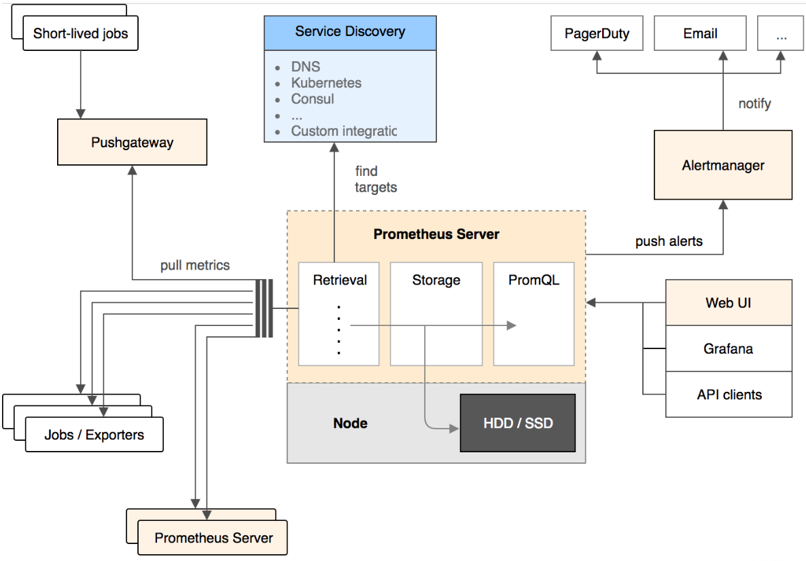

Prometheus是一个开源监控系统，它前身是SoundCloudr的告警工具包。
下面这张图描述了Prometheus的整体架构，以及其生态中的一些常用组件。

Prometheus Server采用拉取方式从监控目标直接拉取数据，或者通过中间网关间接地拉取监控目标推送网关的数据。它在本地抓取的数据，通过一定规则进行清理和整理数据，然后把得到的结果存储起来。各自Web UI使用PromQL查询语言来从Server里获取数据。当Server监测到有异常时会推送告警给Alertmanager，Alertmanager负责去通知相关人。
Prometheus从根本上存储的所有数据都是时间序列数据（Time Serie Data，简称时序数据）。时序数据是具有时间戳的数据流，该数据流属于某个度量指标（Metric）和该度量指标下的多个标签（Label）。除了提供存储功能，Prometheus还可以利用查询表达式来执行非常灵活和复杂的查询。
每个时间序列（Time Serie，简称时序）由y度量指标和一组标签键值对唯一确定。
度量指标名称描述了被监控系统的某个测量特征（比如http_request_total表示http请求总数）。度量指标名称由ASCII字母、数字、下划线和冒号组成，须匹配正则表达式[a-zA-Z_:][a-zA-Z0-9_:]*。
标签开启了Prometheus的多维数据模型。对于同一个度量指标，不同标签值组合会形成特定维度的时序。Prometheus的查询语言可以通过度量指标和标签对时序数据进行过滤和聚合。改变任何试题指标上的任何标签值，都会形成新的时序。标签名称可以包含ASCII字母、数字和下划线，须匹配正则表达式[a-zA-Z_][a-zA-Z0-9_]*，带有_下划线的标签名称保留为内部使用。标签值可以包含任意Unicode字符，包括中文。
时序数据其实就是一系列的采样值。每个采样值包括：
一个注解由一个度量指标和一组标签键值对构成。形式如下：
[metric name]{[label name]=[label value], ...}
例如，度量指标为api_http_requests_total，标签为method="POST"、handler="/messages"的注解表示如下：
api_http_requests_total{method="POST", handler="/messages"}
Prometheus里的试题指标有以下几种类型。
计数器是一种累计型的度量指标，它是一个只能递增的数值。计数器主要用于统计类似于服务请求数、任务完成数和错误出现次数这样的数据。
计量器表示一个既可以增加，又可以减少的度量指标值。计量器主要用于测量类似于温度、内存使用量这样的瞬时数据。
直方图对观察结果（通常是请求持续时间或者响应大小这样的数据）进行采样，并在可配置的桶中对其进行统计。有以下几种方式来产生直方图（假设度量指标为<basename>）：
类似于直方图，汇总也对观察结果进行采样。除了可以统计采样值总和和总数，它还能够按分位数统计。有以下几种方式来产生汇总（假设度量指标为<basename>）：
在Prometheus里，可以从中抓取采样值的端点称为实例，为了性能扩展而复制出来的多个这样的实例形成了一个任务。
例如下面的api-server任务有四个相同的实例：
job: api-server instance 1: 1.2.3.4:5670 instance 2: 1.2.3.4:5671 instance 3: 1.2.3.4:5670 instance 4: 1.2.3.4:5671
Prometheus抓取完采样值后，会自动给采样值添加下面的标签和值：